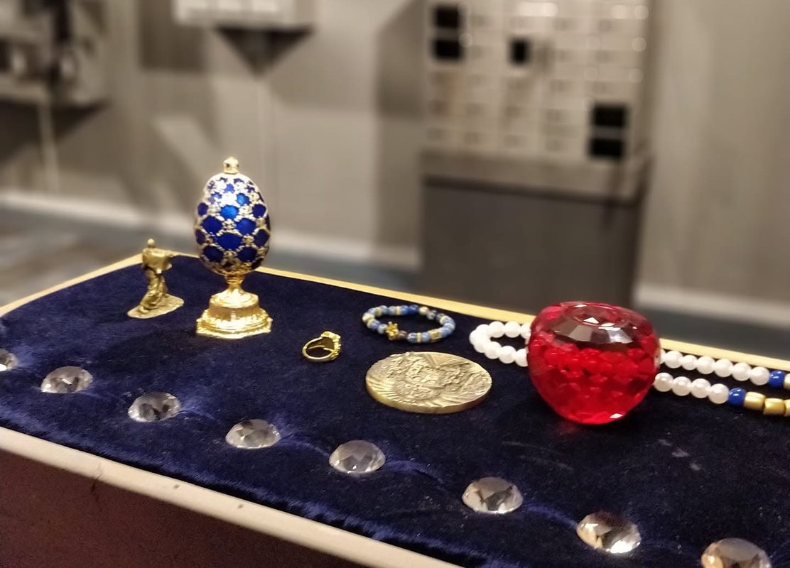
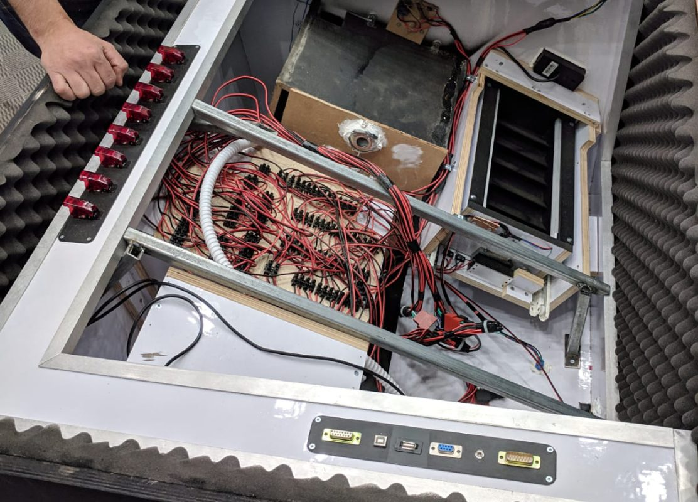
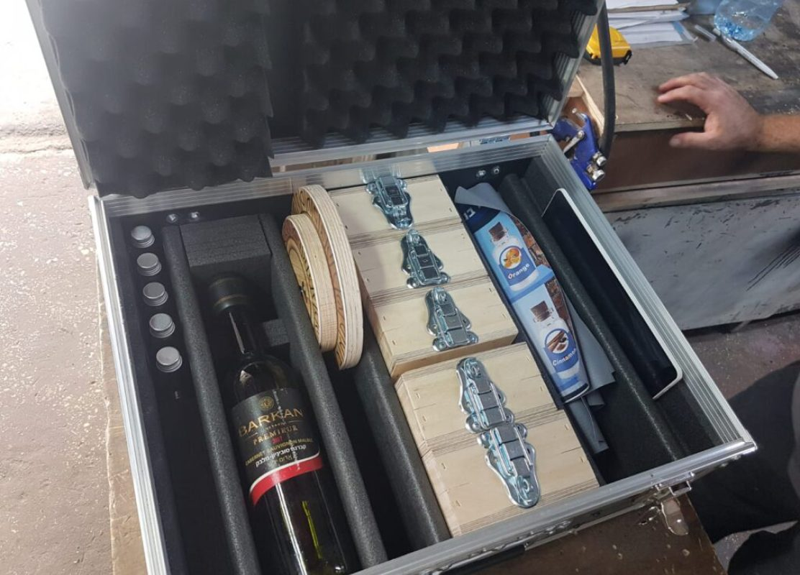
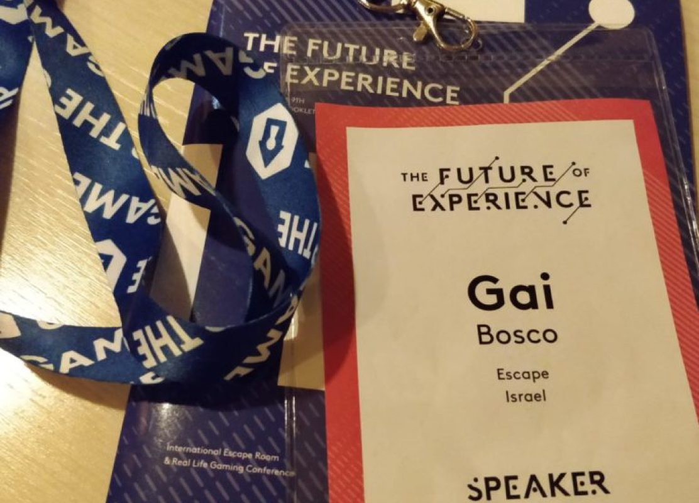

סרברו · שירותים
שירותים
סרברו היא חברת גיימיפיקציה, כלומר אנחנו מתכננים את המשחק עצמו: העלילה, החידות, הסדר שבו הכול קורה. את הבנייה עושים איתנו הספקים הטובים בארץ בעיצוב, בתפאורה ובאלקטרוניקה. כך נוצרו אצלנו מאות פרויקטים, בארץ ובחו"ל, לכל סוג של לקוח.
בניית חדרי בריחה
זה אחד התחומים הגדולים שלנו. אנחנו מתכננים חדרי בריחה מסחריים מכל סוג ובכל ז'אנר, ועוזרים להקים אותם. מה שחשוב לנו זה שתשכחו שאתם בחדר: האווירה, העלילה שמתפתחת, חידות שיש בהן היגיון, אתגר מחשבתי, ומשחק שזורם עד שיוצאים ממנו עם וואו. כל תסריט מקורי, ונכתב לפי מה שאתם צריכים.

חדרים מסחריים
עזרנו לתכנן ולהקים כ-100 מהחדרים המסחריים הכי מוכרים בארץ, ביניהם "גריז", "הוליווד 117", "העוקץ" ו"קיוב".
חדרים ניידים
מגיעים לכל מקום: כיתה, אולם אירועים, חברת הייטק. אפשר להפעיל בהם 30 איש, וכשצריך גם מאות. הכול עניין של תכנון נכון.
ספק אחד או כמה
אפשר לקחת מאיתנו רק את תכנון המשחק ולהמשיך עם ספקים משלכם. אפשר גם לקבל הכול מאיתנו (TurnKey), מהתכנון ועד המפתח לפרויקט גמור.
ייעוץ עסקי למתחילים
רק נכנסים לתחום חדרי הבריחה המסחריים? יש לנו ייעוץ עסקי למתחילים, בתשלום סמלי בלבד.
ייעוץ ביצירה וכתיבת משחקי בריחה
אנחנו מייעצים בכתיבה וביצירה של משחקי בריחה כבר הרבה שנים. ייעצנו לרוב החדרים המסחריים בארץ, ולפרויקטים רבים נוספים. יש לכם חדר קיים? תסריט? פרויקט שאתם מתלבטים לגביו? שיחה עם איש מקצוע יכולה לחסוך הרבה כסף וכאב ראש בהמשך, או לקחת עסק קיים ולהרים אותו גבוה.

תיקוני זרימה משחקית
חדר בינוני יכול להפוך לטופ עם תכנון נכון, תקציב קטן ומעט עבודה. עשינו את זה בעשרות חדרים בארץ.
רפואת תסריטים
קניתם תסריט מחו"ל? כתבתם אחד בעצמכם? תנו לנו לעבור עליו. נתאים, נסמן בעיות ונציע מה לשפר.
התאמה לקהל יעד שונה
גיא כבר הפך חדרים למבוגרים לגרסה משפחתית, וחדרים לא מפחידים לגרסת אימה. כך מגיעים לקהל חדש בלי השקעה גדולה.
קופסאות בריחה
קופסת בריחה (יש מי שקורא לזה ערכת בריחה) היא משחק בריחה שנועד בעיקר ללמד: ידע, ערכים, מיומנויות. מי שמזמין אותן הם בעיקר גופים ציבוריים, מערכת החינוך, מוזיאונים ומרכזי מבקרים, וגם חברות וארגונים. לכל אלה בנינו, ואנחנו ממשיכים לבנות, ערכות בריחה, מרחבי בריחה ומשחקים אחרים.

בכל גודל
מקופסה רגילה עם מנעולים ועד אלקטרוניקה מתקדמת וגאדג'טים מיוחדים.
טכנולוגיות AR ו-VR
אנחנו משלבים גם AR (מציאות רבודה) ו-VR (מציאות מדומה).
על כל נושא
כבר עשינו ערכות על זהירות בדרכים, על היסטוריה, על חלל ועל הרבה נושאים אחרים.
סדר הפעולות והזרימה
חידות על הנושא זה לא מספיק. מה שקובע אם הידע יישמר זה הסדר שבו השחקנים פועלים, הזרימה של המשחק והדרך שבה החוויה עוברת.
הרצאות וסדנאות
גיא מרצה על התחום בכנסים בארץ ובחו"ל, והיה בין הדוברים המרכזיים ב-Up The Game בהולנד, הכנס הגדול בעולם בתחום. בארץ הוא מעביר סדנאות כתיבה וסדנאות ליצירת חוויות בריחה.

סדנאות כתיבה ויצירה
כותבים חידות, בונים קופסת בריחה עם חידות משלכם, ומחליפים קופסאות עם שאר המשתתפים. מהסדנה לכתיבת חדרי בריחה יוצאים עם תסריט לחדר משלכם.
הרצאות על משחוק
הרצאות על גיימיפיקציה למורים, לאנשי חינוך ולחברות: איך מעניינים ומניעים תלמידים ועובדים בעזרת משחק.
למי הסדנאות מתאימות
לאנשי חינוך, למנהלים, ולכל מי שרוצה ללמוד איך מעבירים ידע, ערכים או מיומנות דרך משחק.
למי זה מתאים
מערכת החינוך ותנועות נוער
יותר ויותר בתי ספר, תנועות נוער ומסגרות חינוכיות מעבירים מסרים דרך קופסאות בריחה. אנחנו עוזרים לארגונים חינוכיים, לספקים של משרד החינוך ולגופים שעוסקים בהוראה לבנות משחקים שמלמדים משהו, ושהידע מהם נשמר.
מוזיאונים ומרכזי מבקרים
אנחנו מתכננים למוזיאונים ולמרכזי מבקרים משחקים, מרחבי בריחה וקופסאות בריחה, בתקציבים שונים. זה יכול להתאים למשפחה עם ילדים וגם לאוטובוסים שלמים של מבקרים, ומה שמוצג במקום נהיה מעניין יותר ונשאר בזיכרון.
חברות וארגונים
בנינו לחברות ולארגונים חדרי בריחה, חדרים ניידים, מרחבי בריחה, עמדות ודוכנים. היה חדר בריחה שעוזר לעובדים לזכור את כללי הבטיחות במפעל, משחק שמגדיל מודעות למוצר, אוריינטציה לעובדים חדשים, וגם קוביית בריחה לתערוכות.